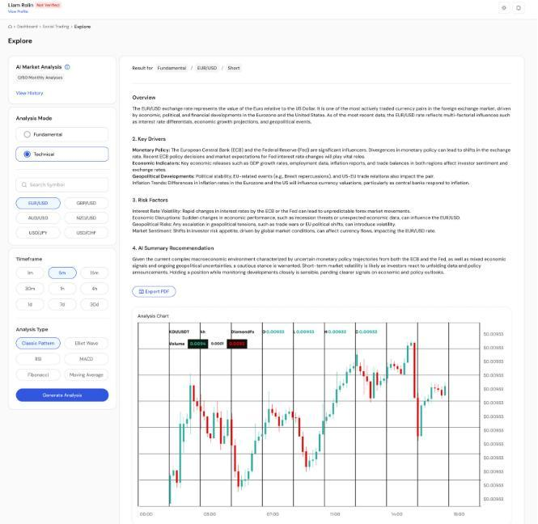

AI / Product Work
AI Market Analyst
AI-assisted chart analysis with symbol and timeframe context, keeping trading decisions with the user.

AI Market Analyst: analysis controls, explanatory output and price-chart context.
Product Overview
An AI-assisted market-analysis product that combines explanatory analysis with price-chart context. It supports trader decisions without automated trade execution.
Business Problem
Market analysis can become fragmented across charts, signals and commentary. The product aims to organize analysis around the selected symbol, timeframe and price structure.
Target Users
Traders reviewing market context and comparing analytical explanations with the price chart.
My Role & Ownership
My work at TopFast brings product strategy, prioritization and technical collaboration to an ecosystem that includes AI-assisted market analysis. My contribution is at the product-leadership level: defining useful product direction and aligning business and technical work.
Product Discovery & Strategy
The product concept centers on visual analysis, context awareness and trader control. The experience keeps analysis choices, explanatory output and chart context together.
Key Product Decisions & Capabilities
Users choose an analysis mode, symbol and timeframe, request analysis and review the explanation alongside a chart. Fundamental and technical analysis controls help frame the request. Trading decisions remain with the user.
Delivery & Cross-functional Collaboration
My responsibilities connect product direction and prioritization with technical collaboration. The product experience keeps user control and the purpose of decision support clear throughout the analysis workflow.
Outcomes & Product Value
AI Market Analyst provides a structured way to review AI-assisted analysis in market context. Its purpose is to support interpretation while preserving user control over trading decisions.
Product Screens
Explore the interfaces and workflows below.